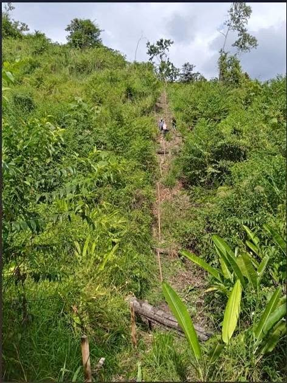

PEN1,230,000 82 ha

Excelente oportunidad de inversión. Se vende propiedad versátil y lista para trabajar, apta para cualquier tipo de cultivo agrícola, proyectos ganaderos de gran escala o zonas de esparcimiento. Características del Terreno Área Total: 82 hectáreas. Infraestructura Ganadera: 82 hectáreas con pasto Brizantha. 11 potreros o parcelas delimitados para rotación. 3 corralones listos para el manejo de ganado. Ubicación y Accesibilidad 👣 Ubicación: Caserío Nuevo Arica, Distrito de San José de Sisa, Provincia de El Dorado, Departamento de San Martín (Perú). Proximidad: A solo 15 minutos de la provinc